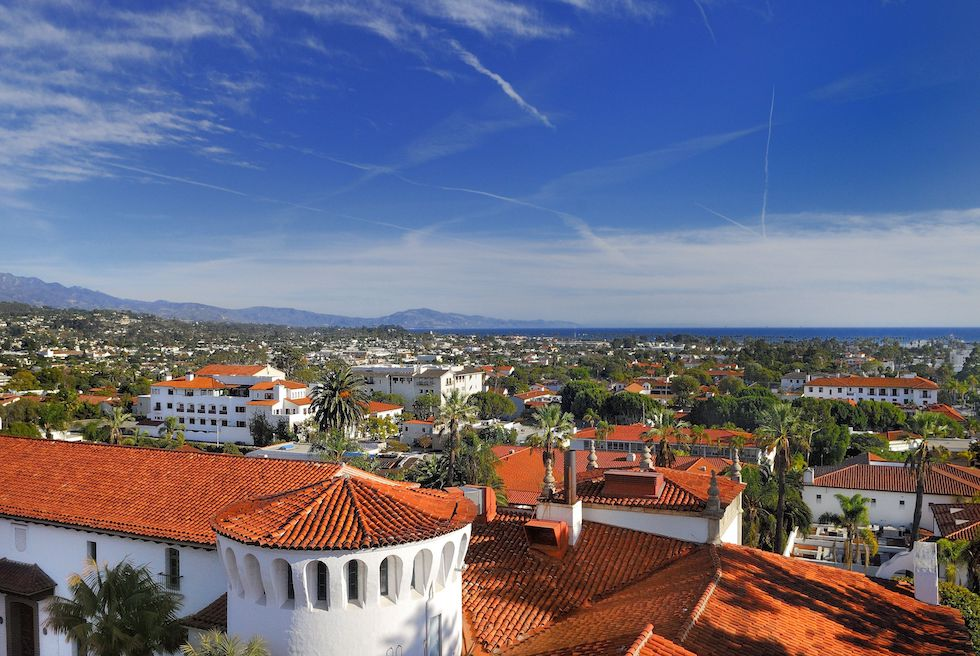
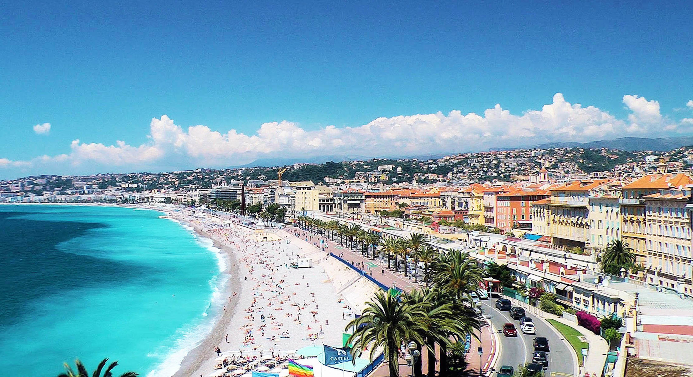
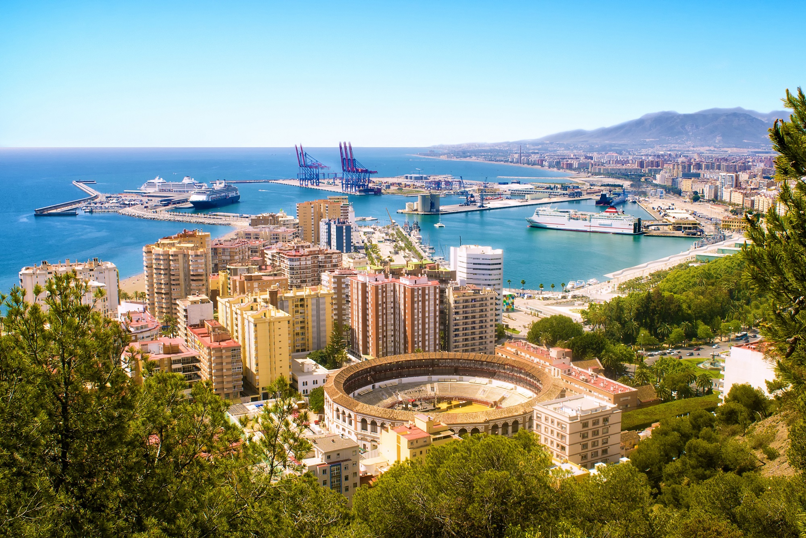
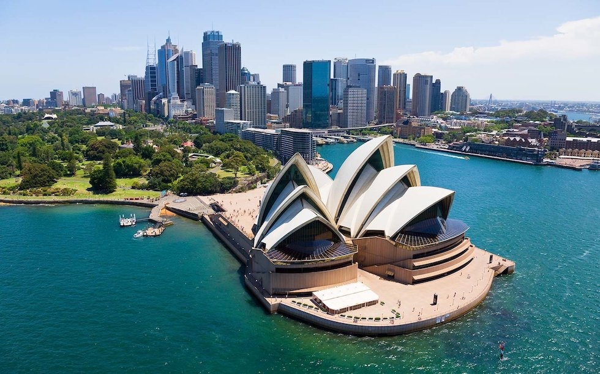
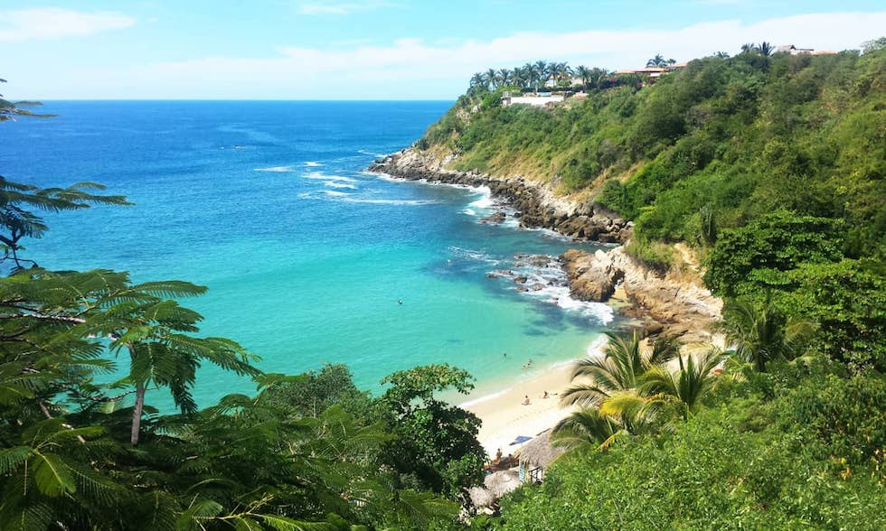
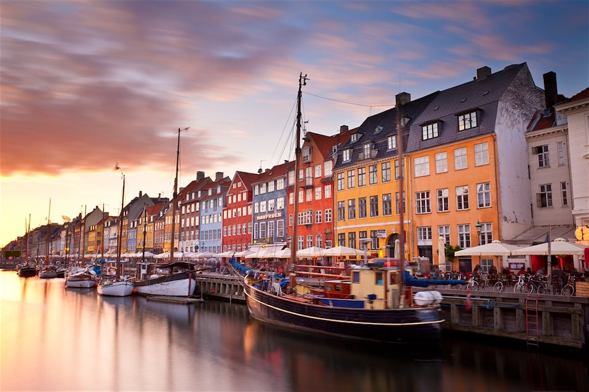

Saskia Menke
Wannabe Programmer
After five years of business school I decided to join Le Wagon to become a developer. Besides coding, I'm passionate about travelling, exploring different cultures and learning foreign languages.
Check out the amazing cities I was blessed enough to have lived in!
My favourite cities
Bielefeld, GermanyMy hometown in Germany that is infamous for the conspiracy that it doesn't actually exist. I was born and raised here and lived here until I graduated from high school in 2012. |
|
|  |
Santa Barbara, United StatesThe French Riviera of California. I was 15 when I went abroad by myself for the first time during high school in 2009 to attend a language school here. |
|  |
Nice, FranceThe real French Riviera. I tried to learn French here for three months in 2009/2010. Though admittedly my focus was more on partying than truly learning to speak French. |
|  |
Málaga, SpainAn amazing city to finish a year abroad with another three-months stay in 2010. This time, however, I actually learnt the local language not least due to my amazing host family. |
|  |
AustraliaInfected with the infamous travel bug, my urge to travel again after high school led me to backpack through Australia for five months in 2012. What a cliché! |
|  |
Puerto Escondido, MexicoLatin America's surfer's paradise where I was blessed enough to spend three months in 2013 to volunteer in an orphanage. And I thought Australia was laid back.. |

|
Maastricht, The NetherlandsA tiny, quiet town in the south of the Netherlands that has been turned upside down by its student population. I could not have thought of a better place to study. |
São Paulo, BrazilA breathtaking city in which I lived for seven months in 2016 for an exchange semester during my bachelor's program. I undeniably lost my heart to place! |
|
|  |
Copenhagen, DenmarkThe Scandinavian jewel that took me by surprise. I moved here in 2016 for my master's degree and was determined to leave right after graduation. Yet, I'm still around.. |
Lisbon, PortugalMy favourite European city in which I lived for four months in 2017 for an exchange semester during my master's program. I hope to be living here one day! |